proyecto
Etno DJ
Ilustraciones de fauna, flora y escenas cotidianas del Caribe, y su montaje en la exposición «Tejer lo universal». (Texto provisional)

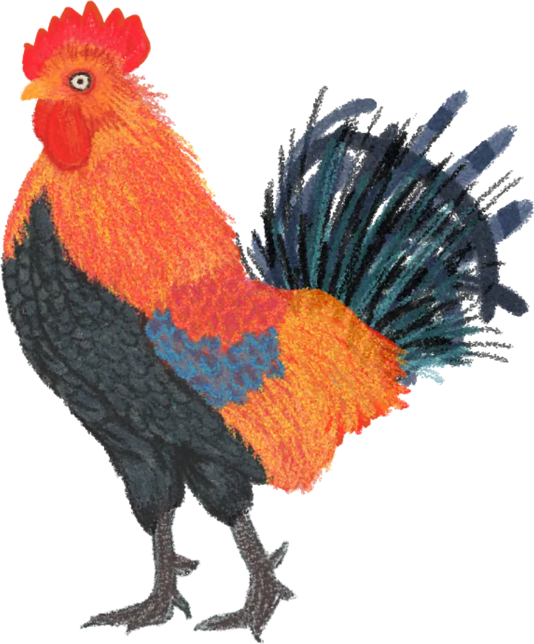
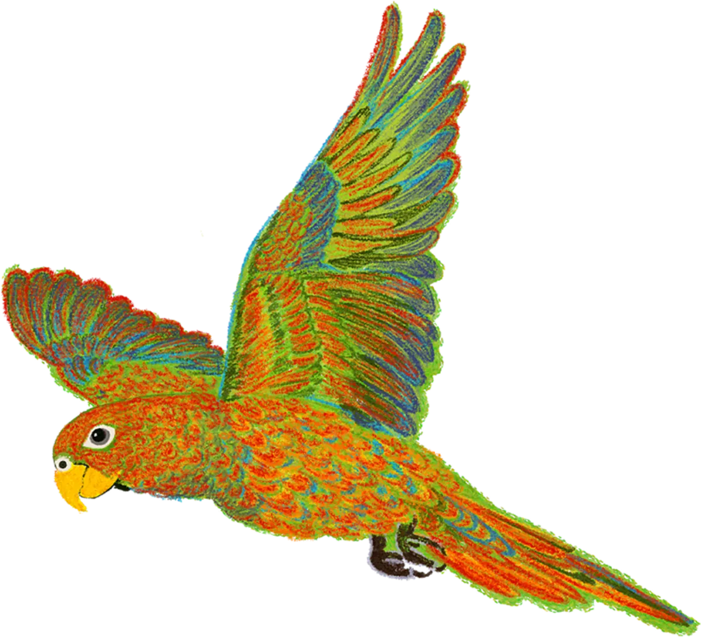
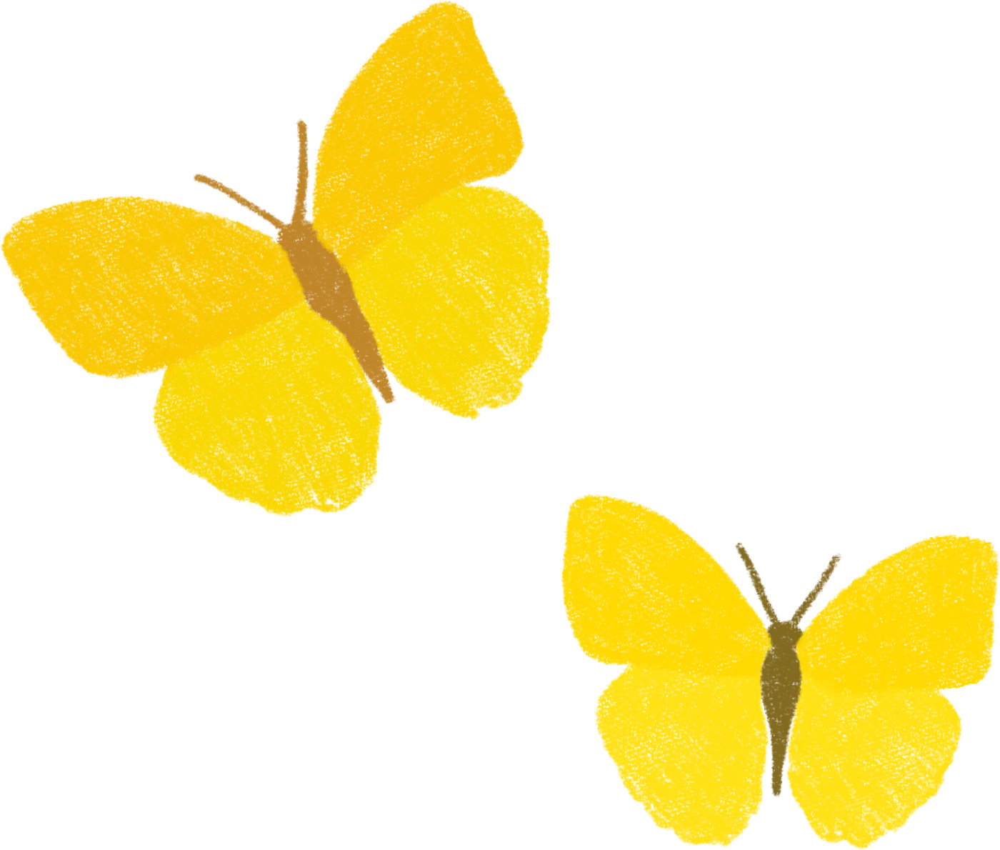
Cada ilustración se hizo como un recorte independiente, para poder combinarlas en piezas impresas, en redes y en el montaje de la exposición. (Texto provisional)
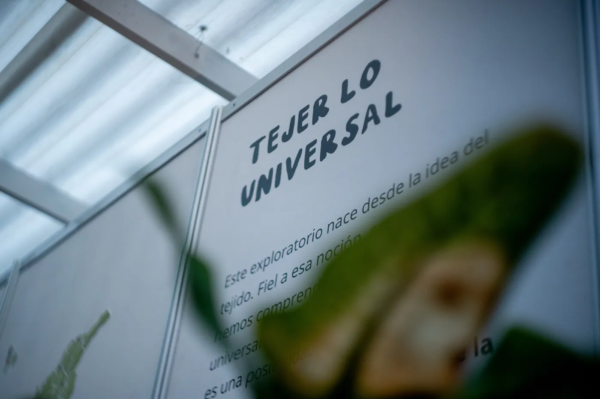
En la sala, las ilustraciones se proyectan y se imprimen a gran escala. Las publicaciones se pueden hojear en una mesa. (Texto provisional)
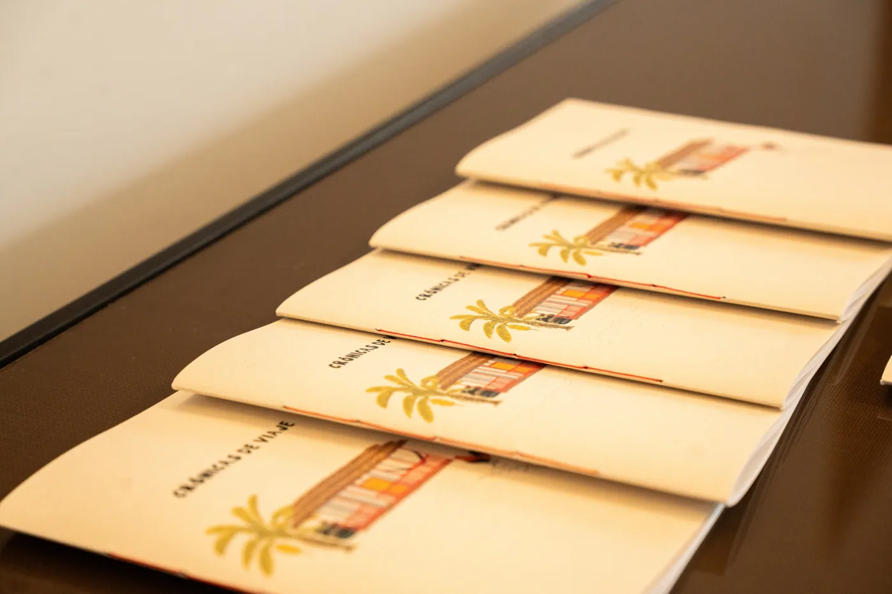
Un mercado, un río, una casa: el paisaje como personaje.
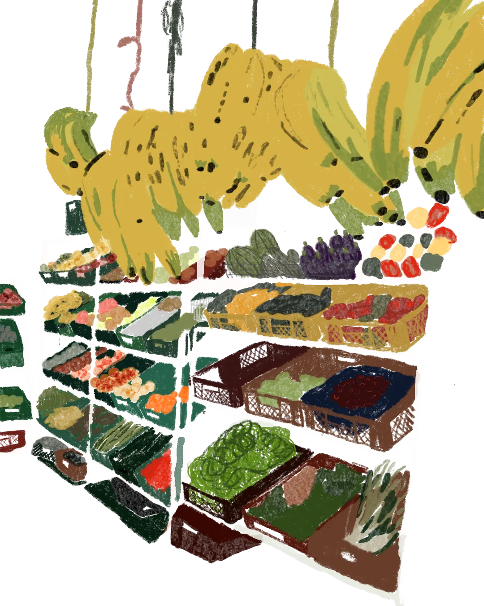
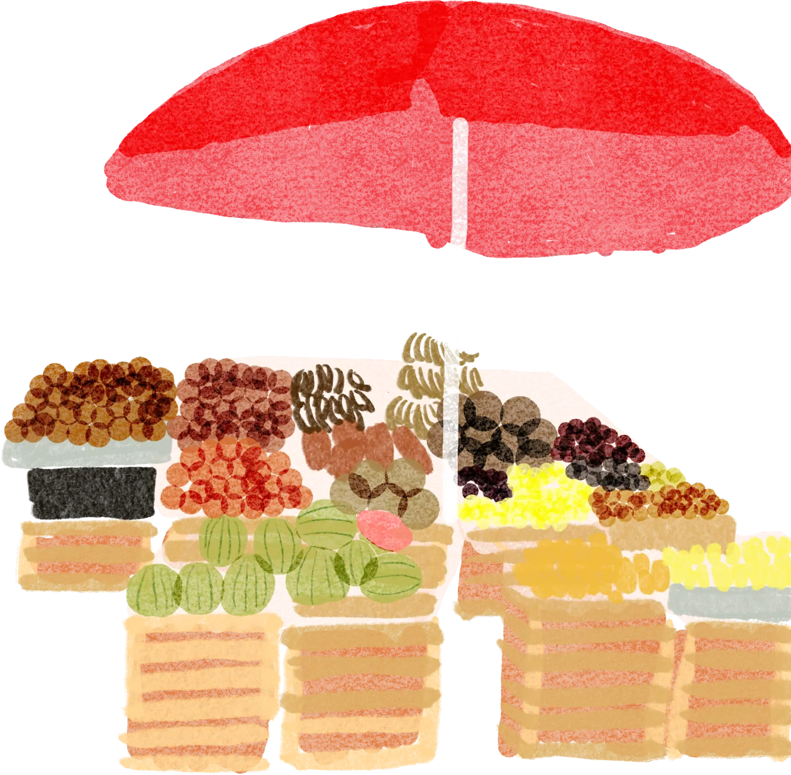
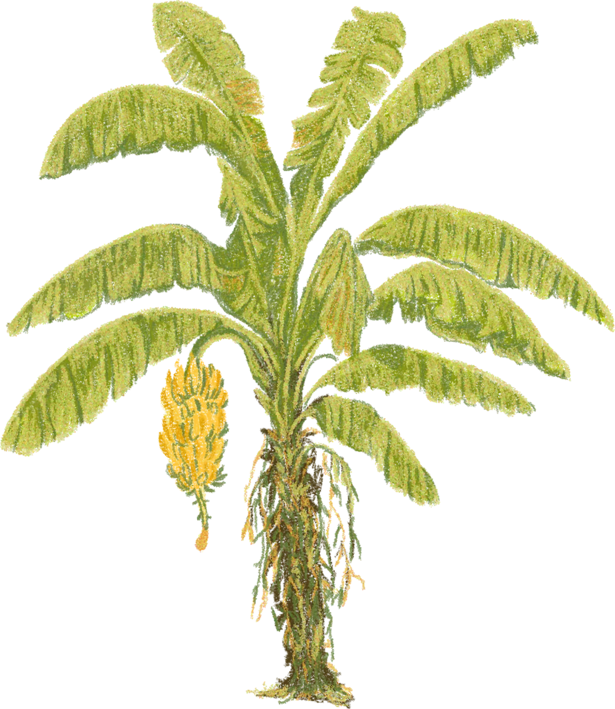
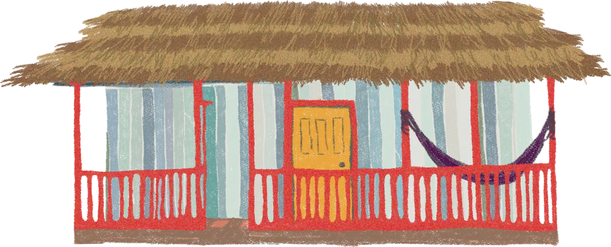
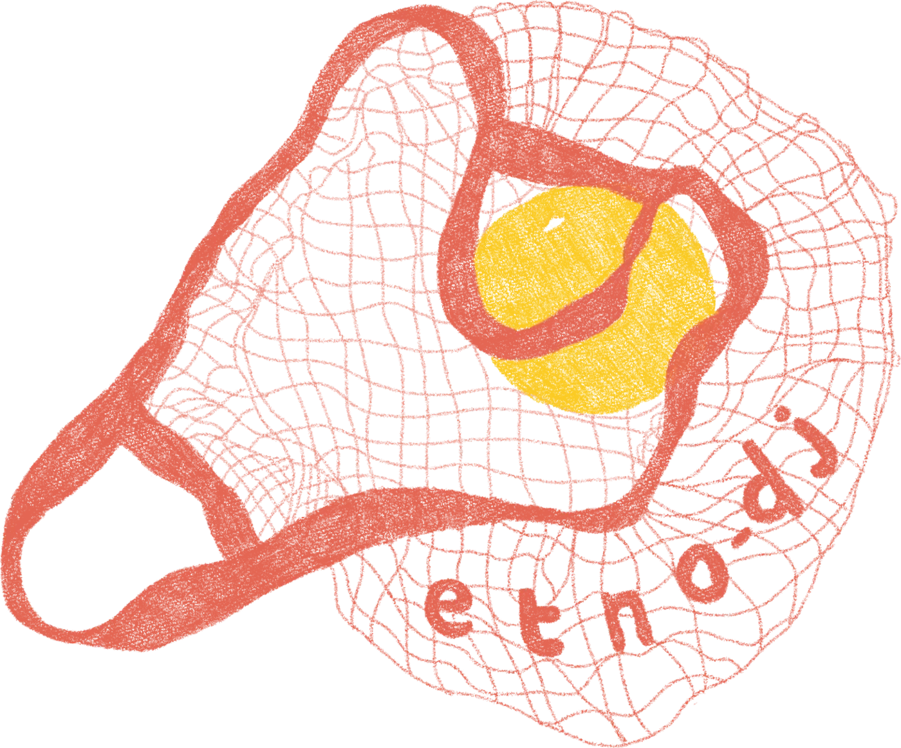
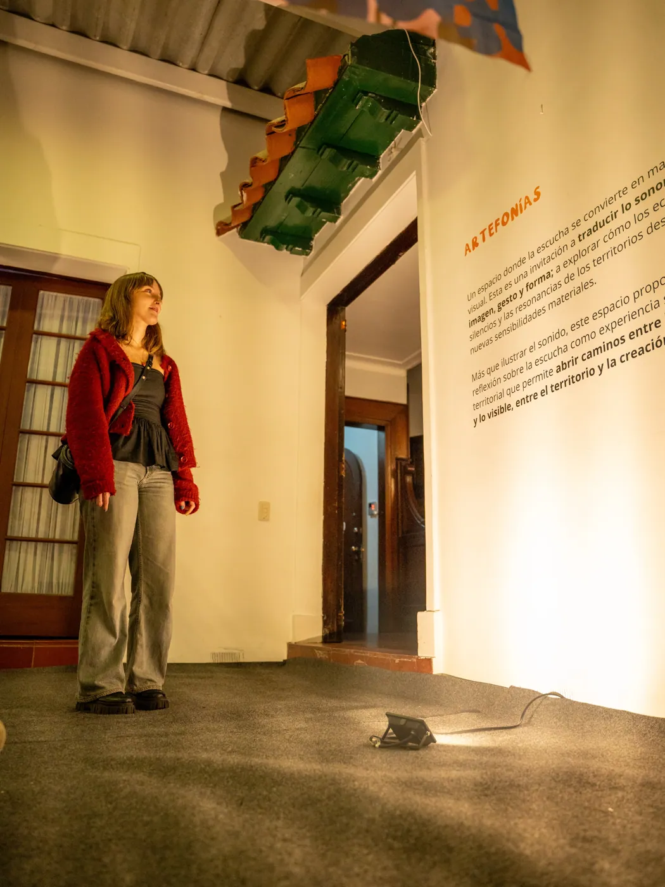